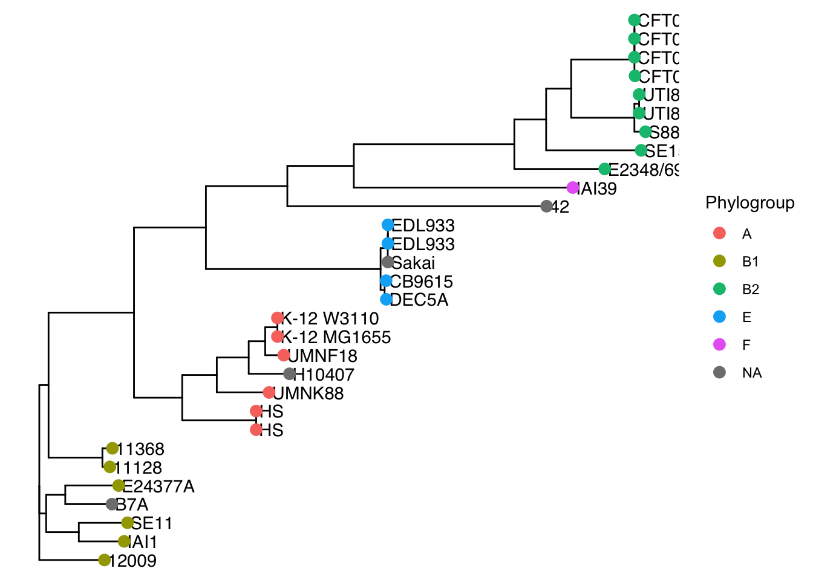
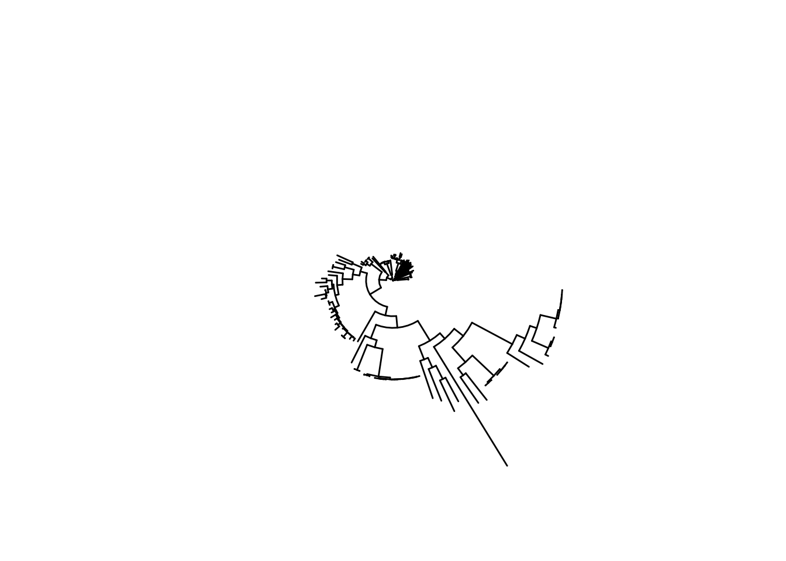

Chapter 3 Biological annotations
A phylo object is excellent to store a phylogeny structure but it was not designed to store the characteristics of the studied organisms. As we need this data to make sense of the phylogeny we store it in tables elsewhere.
Here is a list of some frequently used annotations with emphasis in bacteria:
- Taxonomy: Species or clade within a species (ej. B2 in E. coli)
- Isolate/strain name
- Sequence type: an specific combination of marker gene alleles. (e. g. In E. coli: adk, fumC, gyrB, purA, recA, icd and mdh)
- Geography: Country, state
- Host type: Human, pig, cow, tomato, others.
- Group within a study: this study, outgroup, model strain, others.
To work with the corresponding annotations wee need to charge the metadata ane make its ids follow the same order as tip.labels of the phylo tree
- Charge
## # A tibble: 6 × 4
## Assembly.Accession Strain Patotype Phylogroup
## <chr> <chr> <chr> <chr>
## 1 GCF_000007445.1 CFT073 UPEC B2
## 2 GCF_000010385.1 SE11 Comensal B1
## 3 GCF_000010485.1 SE15 Comensal B2
## 4 GCF_000010745.1 12009 EHEC B1
## 5 GCF_000010765.1 11128 EHEC B1
## 6 GCF_000013265.1 UTI89 UPEC B2- Reorder
library(dplyr)
tree_eco<-read.tree("data/example_eco_model.nwk")
metadata <- metadata %>%
filter(Assembly.Accession %in% tree_eco$tip.label) %>%
arrange(match(Assembly.Accession, tree_eco$tip.label))We will now show two easy ways to work with these metadata now, but the corresponding tools will be covered in more detail in later chapters.
3.0.1 Add metadata to ggtree objects
ggtree objects are a kind of ggplot object designed to represent phylogenies. Here we construct a ggtree object from a phylo object and add the metadata to it.
After we add the metadata we can use it to customize the plot aesthetics.
library(ggtree)
p<-ggtree(tree_eco)
p<-p %<+% metadata
p<-p + geom_tiplab(aes( label=Strain)) +
geom_tippoint(aes(color = Phylogroup), size = 3)
p
3.0.2 phylo to tidytree
tidytree objects are phylogenetic tree data structures transformed into a “tidy” format. They are S4 objects with a rigid encapsulation and building. Fortunately, tibble functions make the coversion from a phylo to a tidytree object straightforward.
## [1] "tbl_tree" "tbl_df" "tbl" "data.frame"## # A tibble: 6 × 4
## parent node branch.length label
## <int> <int> <dbl> <chr>
## 1 33 1 0.00584 GCF_000026265.1
## 2 33 2 0.00627 GCF_000010385.1
## 3 34 3 0.00602 GCF_018884265.1
## 4 34 4 0.00687 GCF_000017745.1
## 5 36 5 0.00096 GCF_000010765.1
## 6 36 6 0.00129 GCF_000091005.1We can now join the two table like objects
treetib_w_data<-left_join(treetib,metadata,
by = c("label"="Assembly.Accession"))
head(treetib_w_data)## # A tibble: 6 × 7
## parent node branch.length label Strain Patotype Phylogroup
## <int> <int> <dbl> <chr> <chr> <chr> <chr>
## 1 33 1 0.00584 GCF_000026265.1 IAI1 Comensal B1
## 2 33 2 0.00627 GCF_000010385.1 SE11 Comensal B1
## 3 34 3 0.00602 GCF_018884265.1 B7A ETEC <NA>
## 4 34 4 0.00687 GCF_000017745.1 E24377A ETEC B1
## 5 36 5 0.00096 GCF_000010765.1 11128 EHEC B1
## 6 36 6 0.00129 GCF_000091005.1 11368 EHEC B1With these object you can explore and manipulate the phylogeny data, we will go back to this later on.
3.0.3 treeio full_join
The full_join function of the treeio package allows you to directly bind the metadata to a phylo tree.
tree_eco_w_meta<-full_join(tree_eco,metadata,by=c("label"="Assembly.Accession"))
class(tree_eco_w_meta)## [1] "treedata"
## attr(,"package")
## [1] "tidytree"## 'treedata' S4 object'.
##
## ...@ phylo:
##
## Phylogenetic tree with 30 tips and 28 internal nodes.
##
## Tip labels:
## GCF_000026265.1, GCF_000010385.1, GCF_018884265.1, GCF_000017745.1,
## GCF_000010765.1, GCF_000091005.1, ...
## Node labels:
## , 0.981998, 0.574257, 0.960396, 0.996464, 1.000000, ...
##
## Unrooted; includes branch length(s).
##
## with the following features available:
## '', 'Strain', 'Patotype', 'Phylogroup'.
##
## # The associated data tibble abstraction: 58 × 6
## # The 'node', 'label' and 'isTip' are from the phylo tree.
## node label isTip Strain Patotype Phylogroup
## <int> <chr> <lgl> <chr> <chr> <chr>
## 1 1 GCF_000026265.1 TRUE IAI1 Comensal B1
## 2 2 GCF_000010385.1 TRUE SE11 Comensal B1
## 3 3 GCF_018884265.1 TRUE B7A ETEC <NA>
## 4 4 GCF_000017745.1 TRUE E24377A ETEC B1
## 5 5 GCF_000010765.1 TRUE 11128 EHEC B1
## 6 6 GCF_000091005.1 TRUE 11368 EHEC B1
## 7 7 GCF_022453605.1 TRUE HS Comensal A
## 8 8 GCF_000017765.1 TRUE HS Comensal A
## 9 9 GCF_000005845.2 TRUE K-12 MG1655 Comensal A
## 10 10 GCF_000010245.2 TRUE K-12 W3110 Comensal A
## # ℹ 48 more rowsNow you can use this tree object with ggtree and reference the table of variants in the styling.
library(ggtree)
library(RColorBrewer)
plo<-ggtree(tree_eco_w_meta) +
geom_nodelab(size=2,color="black") +
geom_tiplab(aes(label=Strain),size=2) +
geom_tippoint(aes(color=Phylogroup))
plo